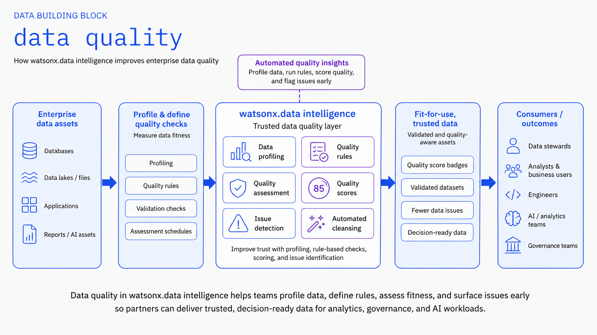

Data Quality¶
Ensure data quality through validation rules and quality checks to maintain trustworthy data for AI applications.
GitHub Repository
The complete source code and examples are available in the GitHub repository:
Overview¶
The Data Quality building block provides comprehensive data quality assessment, monitoring, and validation capabilities. It enables organizations to maintain high data quality standards through automated validation rules, profiling, and continuous monitoring.

IBM Products Used¶
This building block leverages the following IBM products and services:
- IBM watsonx.data Intelligence: AI-powered data intelligence and governance platform
- IBM Knowledge Catalog: Enterprise catalog for data governance
- IBM Cloud Pak for Data: Unified data and AI platform
Features¶
Data Quality Management¶
- Automated data quality assessment
- Data profiling and validation
- Quality rule definition and enforcement
- Quality metrics and reporting
Data Lineage Tracking¶
- End-to-end data lineage visualization
- Impact analysis for data changes
- Dependency tracking across systems
- Automated lineage capture
Governance Integration¶
- Integration with data catalogs
- Policy enforcement and compliance
- Audit trail and change tracking
- Metadata management
Use Cases¶
- Data Quality Monitoring: Continuously monitor data quality across systems
- Regulatory Compliance: Track data lineage for compliance requirements
- Impact Analysis: Understand downstream impacts of data changes
- Data Governance: Enforce data quality standards and policies
- Root Cause Analysis: Trace data issues back to their source
Getting Started¶
Prerequisites¶
Requirements
- IBM watsonx.data Intelligence environment
- IBM Cloud account with appropriate permissions
- Python 3.12+ for automation scripts
- Access to data sources for lineage tracking
Basic Setup¶
-
Set up watsonx.data Intelligence environment
-
Configure data quality rules and policies
-
Enable lineage tracking for data sources
-
Set up monitoring and alerting
Architecture Pattern¶
flowchart LR
subgraph Sources["Data Sources"]
DB["Databases"]
Files["Files"]
APIs["APIs"]
end
subgraph Quality["Quality & Lineage"]
Profile["Data Profiling"]
Rules["Quality Rules"]
Lineage["Lineage Tracking"]
end
subgraph Governance["Governance"]
Catalog["Data Catalog"]
Policies["Policies"]
Reports["Reports"]
end
Sources --> Quality
Quality --> GovernanceBest Practices¶
Quality & Lineage Best Practices
- Automated Profiling: Regularly profile data to detect quality issues
- Clear Rules: Define clear, measurable data quality rules
- Lineage Capture: Automate lineage capture at all integration points
- Impact Analysis: Perform impact analysis before making changes
- Documentation: Document data quality standards and lineage
- Monitoring: Set up alerts for quality threshold violations
Bob Mode¶
Give IBM Bob a Data Quality specialist persona.
Install (Windows):
Copy-Item bob-modes/base-modes/data-quality-builder.zip "$env:APPDATA\IBM Bob\User\globalStorage\ibm.bob-code\modes\"
cp bob-modes/base-modes/data-quality-builder.zip ~/.config/IBM\ Bob/User/globalStorage/ibm.bob-code/modes/
Restart IBM Bob — Data Quality Builder mode appears in the mode selector.
Bob Skills¶
| Skill | Zip | Capabilities |
|---|---|---|
data-quality-rules |
data-quality-rules.zip |
Data quality rule authoring, watsonx.data Intelligence quality checks, profiling automation, threshold design, compliance reporting patterns |
unzip bob-skills/data-quality-rules.zip
Open IBM Bob → Skills panel → enable data-quality-rules.
Resources¶
Support¶
For issues or questions, please refer to the GitHub repository or contact IBM support.